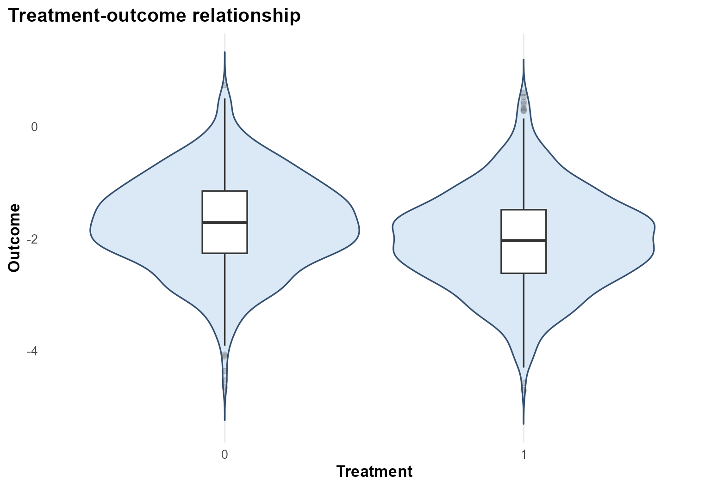
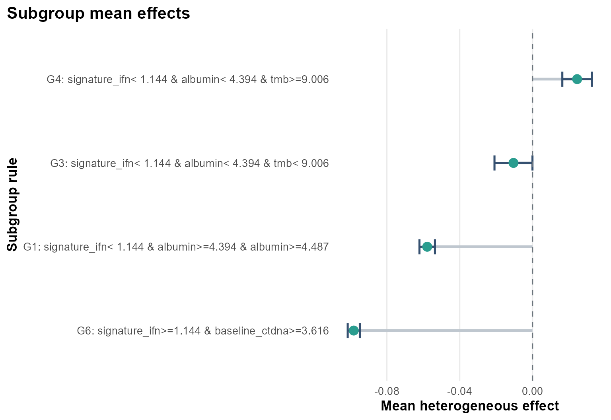
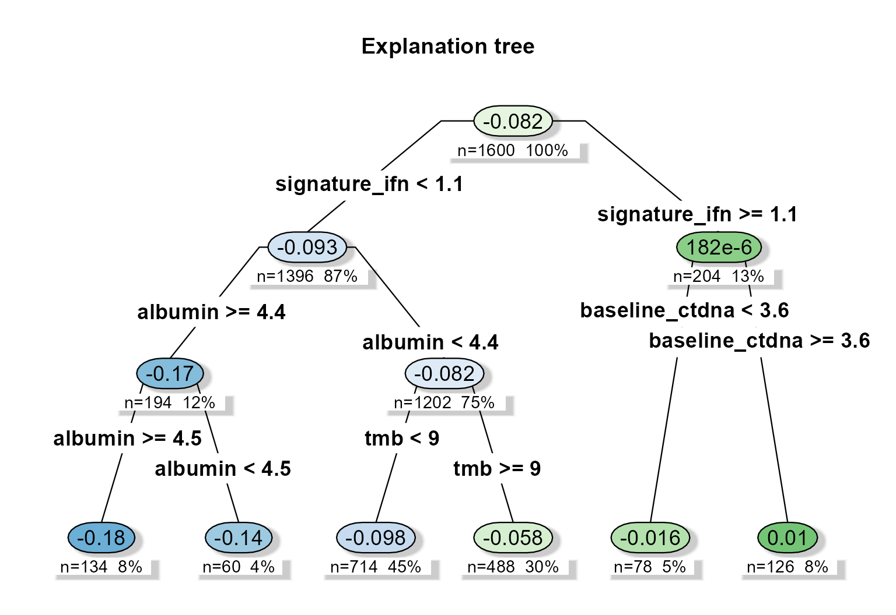
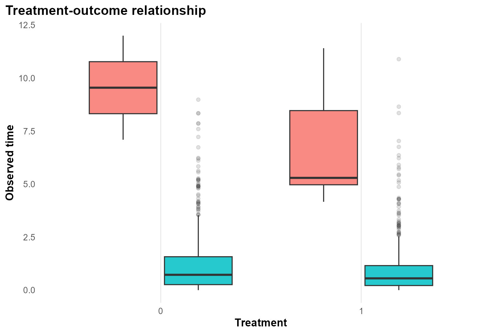
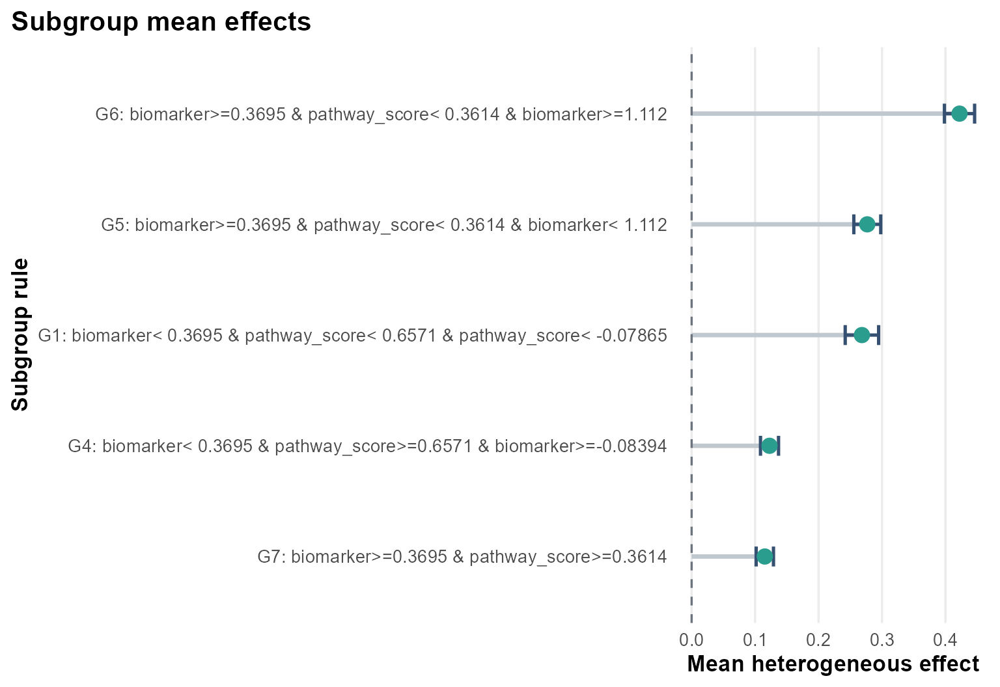
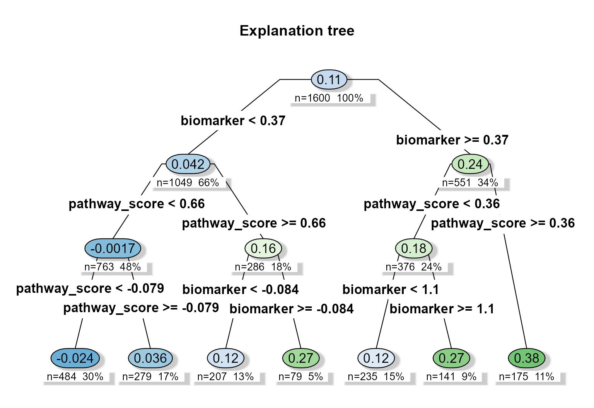
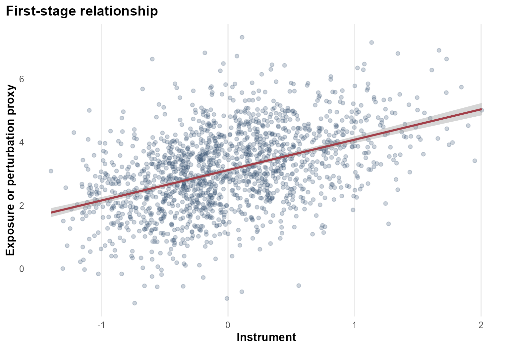
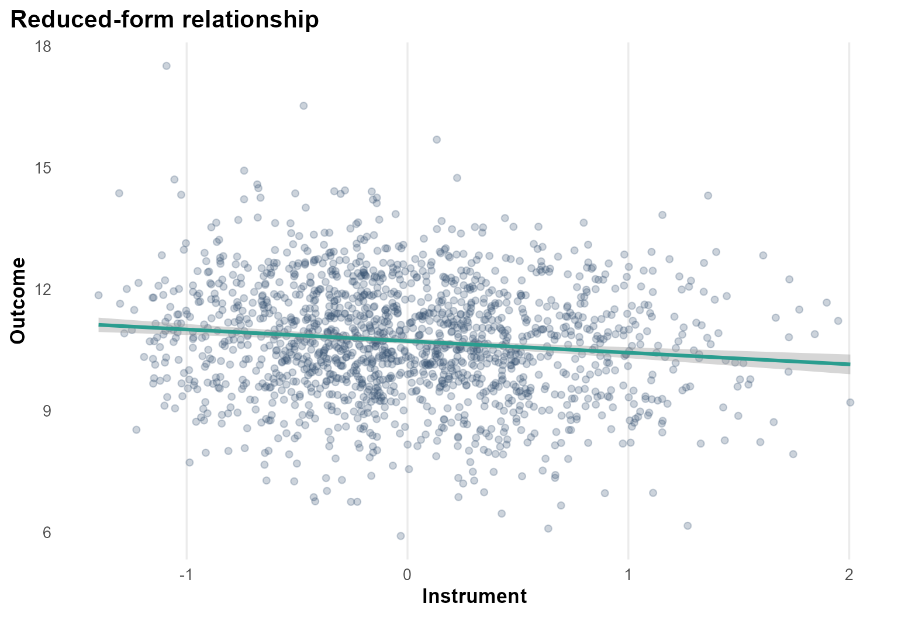
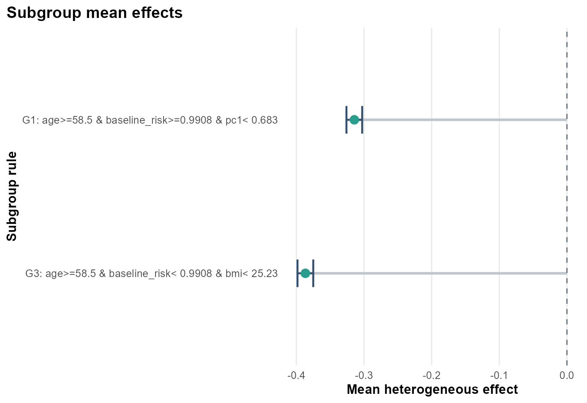
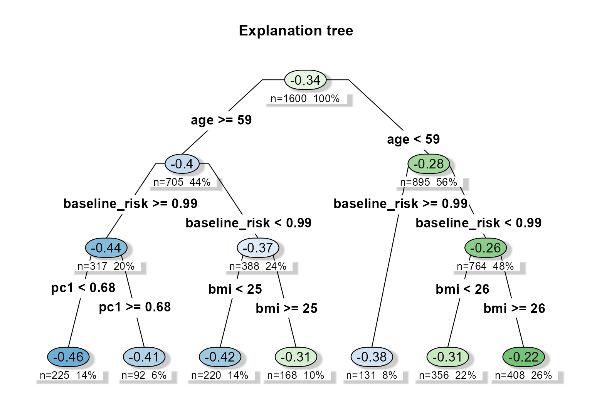

heteff standardizes three generalized random forest
workflows:
- observational causal forests
- causal survival forests
- instrumental forests
The package keeps one interface and one output shape across these workflows.
Core estimands
1. Observational workflow
obs_data <- simulate_observational_data(n = 1600, seed = 123)
fit_obs <- fit_observational_forest(
data = obs_data,
outcome = "outcome",
treatment = "treatment",
covariates = c(
"age", "sex", "ecog", "line", "liver_met", "tmb", "msi",
"signature_ifn", "baseline_ctdna", "albumin", "crp", "site_volume"
),
sample_id = "sample_id",
seed = 123,
num_trees = 400,
tree_minbucket = 60
)
fit_obs$subgroup_table
#> subgroup rule n
#> 1 G1 signature_ifn< 1.144 & albumin>=4.394 & albumin>=4.487 488
#> 2 G3 signature_ifn< 1.144 & albumin< 4.394 & tmb< 9.006 78
#> 3 G4 signature_ifn< 1.144 & albumin< 4.394 & tmb>=9.006 126
#> 4 G6 signature_ifn>=1.144 & baseline_ctdna>=3.616 714
#> effect_mean effect_low effect_high
#> 1 -0.05782243 -0.06207677 -5.356809e-02
#> 2 -0.01044183 -0.02087649 -7.164707e-06
#> 3 0.02451884 0.01639585 3.264183e-02
#> 4 -0.09816993 -0.10149282 -9.484703e-02
plot_treatment_outcome(fit_obs)
plot_subgroup_effects(fit_obs)
plot_effect_tree(fit_obs)
2. Survival workflow
surv_data <- simulate_survival_data(n = 1600, seed = 321, horizon = 12)
fit_surv <- fit_survival_forest(
data = surv_data,
time = "time",
event = "event",
treatment = "treatment",
covariates = c(
"age", "sex", "ecog", "line", "liver_met", "inflammation",
"biomarker", "pathway_score", "steroid"
),
horizon = 12,
sample_id = "sample_id",
seed = 321,
num_trees = 400,
tree_minbucket = 60
)
#> Warning in grf::causal_survival_forest(X = as.matrix(analysis_data[,
#> covariates, : Estimated censoring probabilities are lower than 0.2 - an
#> identifying assumption is that there exists a fixed positive constant M such
#> that the probability of observing an event past the maximum follow-up time is
#> at least M (i.e. P(T > horizon | X) > M).
fit_surv$subgroup_table
#> subgroup rule
#> 1 G1 biomarker< 0.3695 & pathway_score< 0.6571 & pathway_score< -0.07865
#> 2 G4 biomarker< 0.3695 & pathway_score>=0.6571 & biomarker>=-0.08394
#> 3 G5 biomarker>=0.3695 & pathway_score< 0.3614 & biomarker< 1.112
#> 4 G6 biomarker>=0.3695 & pathway_score< 0.3614 & biomarker>=1.112
#> 5 G7 biomarker>=0.3695 & pathway_score>=0.3614
#> n effect_mean effect_low effect_high
#> 1 79 0.2683342 0.2420023 0.2946661
#> 2 235 0.1227126 0.1084979 0.1369273
#> 3 141 0.2767789 0.2555608 0.2979969
#> 4 175 0.4221297 0.3983544 0.4459051
#> 5 207 0.1153143 0.1016789 0.1289496
plot_treatment_outcome(fit_surv)
plot_subgroup_effects(fit_surv)
plot_effect_tree(fit_surv)
3. Instrumental workflow
iv_data <- simulate_instrumental_data(n = 1600, seed = 456)
fit_iv <- fit_instrumental_forest(
data = iv_data,
outcome = "outcome",
treatment = "treatment",
instrument = "instrument",
covariates = c(
"age", "sex", "bmi", "smoking", "pc1", "pc2",
"center", "batch", "baseline_risk"
),
sample_id = "sample_id",
seed = 456,
num_trees = 400,
tree_minbucket = 60
)
fit_iv$subgroup_table
#> subgroup rule n effect_mean
#> 1 G1 age>=58.5 & baseline_risk>=0.9908 & pc1< 0.683 168 -0.3143326
#> 2 G3 age>=58.5 & baseline_risk< 0.9908 & bmi< 25.23 131 -0.3866758
#> effect_low effect_high
#> 1 -0.3259700 -0.3026951
#> 2 -0.3983302 -0.3750213
plot_first_stage(fit_iv)
#> `geom_smooth()` using formula = 'y ~ x'
plot_reduced_form(fit_iv)
#> `geom_smooth()` using formula = 'y ~ x'
plot_subgroup_effects(fit_iv)
plot_effect_tree(fit_iv)
Common output tables
Every heteff_fit object returns the same top-level
outputs:
effect_tablesubgroup_tabletree_tableranking_tablecheck_tableestimand_tablevariable_importance
names(fit_iv)
#> [1] "analysis_type" "estimand_label" "analysis_data"
#> [4] "spec" "config" "forest"
#> [7] "effect_table" "subgroup_table" "tree"
#> [10] "tree_table" "ranking_table" "check_table"
#> [13] "estimand_table" "variable_importance"Export tables and plots
export_tables(fit_iv, "output")
export_plots(fit_iv, "output")